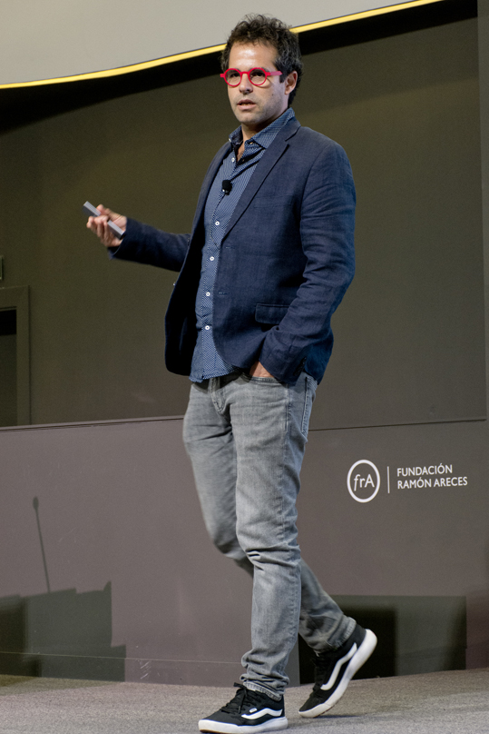

I am an Associate Professor at the Department of Economics and Business at Universitat Pompeu Fabra, Affiliated Professor at the Barcelona School of Economics (BSE) and IPEG, and a Research Fellow at CEPR (Development and Political Economics groups) and IZA@LISER, and a Research Affiliate at J-PAL and BREAD.
I work on development, organizational, and political economics. I am also co-editor at the World Bank Economic Review and associate editor at the Economic Journal.
I am one of the co-founders and former organizer of the biweekly Virtual Development Seminar (VDEV-CEPR-BREAD).
Recent Highlights
Appointment
Mar. 2026
Appointed as a Research Fellow at IZA@LISER.
Appointment
Jan. 2026
Appointed as a Research Fellow at CEPR (Development and Political Economics groups).
Publication
Aug. 2025
"The Allocation of Incentives in Multi-layered Organizations: Evidence from a Community Health Program in Sierra Leone"
(with Erika Deserranno, Stefano Caria, and Philipp Kastrau) published at the Journal of Political Economy.
Publication
Nov. 2025
"When Transparency Fails: Financial Incentives for Local Banking Agents in Indonesia"
(with Erika Deserranno and Firman Witoelar) published at the Review of Economics and Statistics.
Grant
Mar. 2025
IGC grant to evaluate the impacts of Productive Social Safety Nets and Youth Unemployment in Sierra Leone
(with Benedetta Lerva and Mahreen Khan).
Publication
Mar. 2025
"Promotions and Productivity: The Role of Meritocracy and Pay Progression in the Public Sector"
(with Erika Deserranno and Philipp Kastrau) published at American Economic Review: Insights.
Publication
Feb. 2025
"Policy-Making, Trust and the Demand for Public Services: Evidence from a Nationwide Family Planning Program"
(with Dijana Zejcirovic and Fernando Fernandez) published at American Economic Journal: Economic Policy.
Selected Talks & Public Appearances
- Nov. 12–14, 2026 Invited presentation at LACEA-LAMES 2026, Lima, Peru.
- Sept. 17–18, 2026 Discussion at the CEPR IMO-ESF Workshop, Barcelona.
- Aug. 28, 2026 Keynote presentation at SECHI 2026.
- Jun. 24, 2026 Presentation of "Signal Extraction in Hiring: Evidence from Teacher Recruiting" at the CESifo Venice Summer Institute workshop "Managing the State: A New Look at Bureaucrats and Public Administration."
- May 29, 2026 Seminar at the University of Cagliari, presenting "Dual Labor Markets, Housing and Migration Attitudes: Structural Impacts of Venezuelan Immigration in Peru."
- Dec. 17–19, 2025 Presentation at the 50th Symposium of the Spanish Economic Association (SAEe), Universitat Autònoma de Barcelona.
- Dec. 10, 2025 Seminar at the University of Milano-Bicocca.
- Dec. 1, 2025 Seminar at Uppsala University.
- Nov. 20–22, 2025 Presentation at the 30th LACEA Annual Meeting, Recife, Brazil.
- Oct. 22, 2025 Presentation at the III Spanish Workshop in Development Economics (SPANDE), Fundación Ramón Areces, Madrid.
- Sept. 29–30, 2025 Presentation at the 2nd EPSI Conference (Economics of the Public Sector and Institutions), Bank of Italy, Rome.